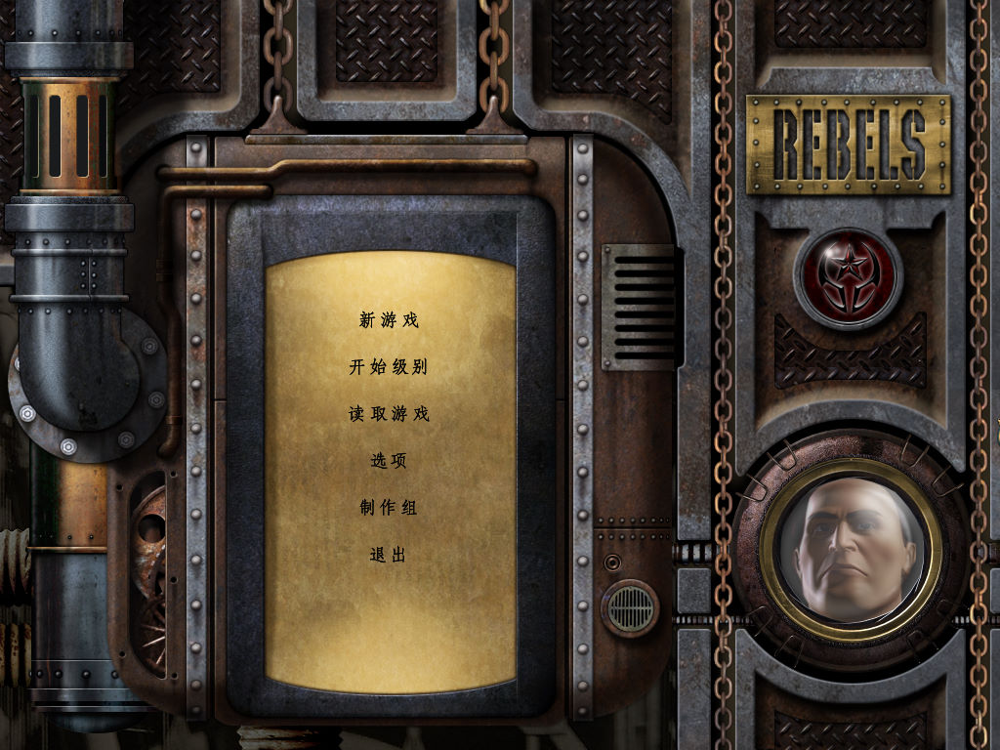
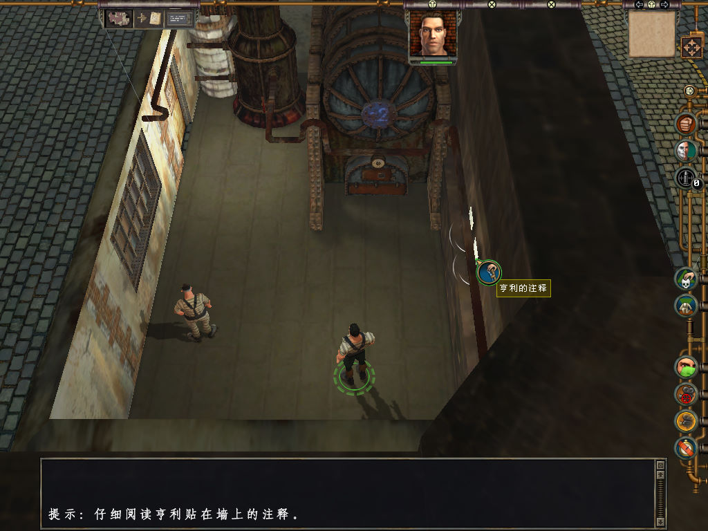

名稱：鐵獄大逃殺／盟軍特種兵：脫獄狂潮／反叛：脱獄 (Rebels: Prison Escape，簡中／英文版)
簡介：Philos 2004年出品的即時戰術與策略動作冒險遊戲，由HIP代理發行，台灣由英特衛
代理進口，但並未中文化，簡中版則由正普或天信德代理發行 [待補]。


保護：英文版無保護，簡中版為光碟，破解碼：
Rebels.exe
75 3E 8B 45
EB -- -- --
備註：簡中版必在簡中系統上執行，否則會檢驗不到光碟（可使用破解碼解決）。